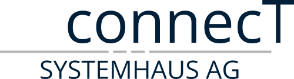

Dein persönliches KI-Kompetenzprofil
18 Fragen zu deiner Einstellung, Kompetenz und Nutzung von KI im Arbeitsalltag. Du erhältst sofort dein persönliches Profil.
Ca. 5 Minuten. Alle Angaben werden lokal in deinem Browser ausgewertet — es werden keine Daten gespeichert oder übertragen.
Dein persönliches KI-Readiness-Profil